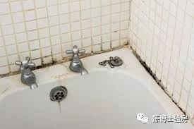
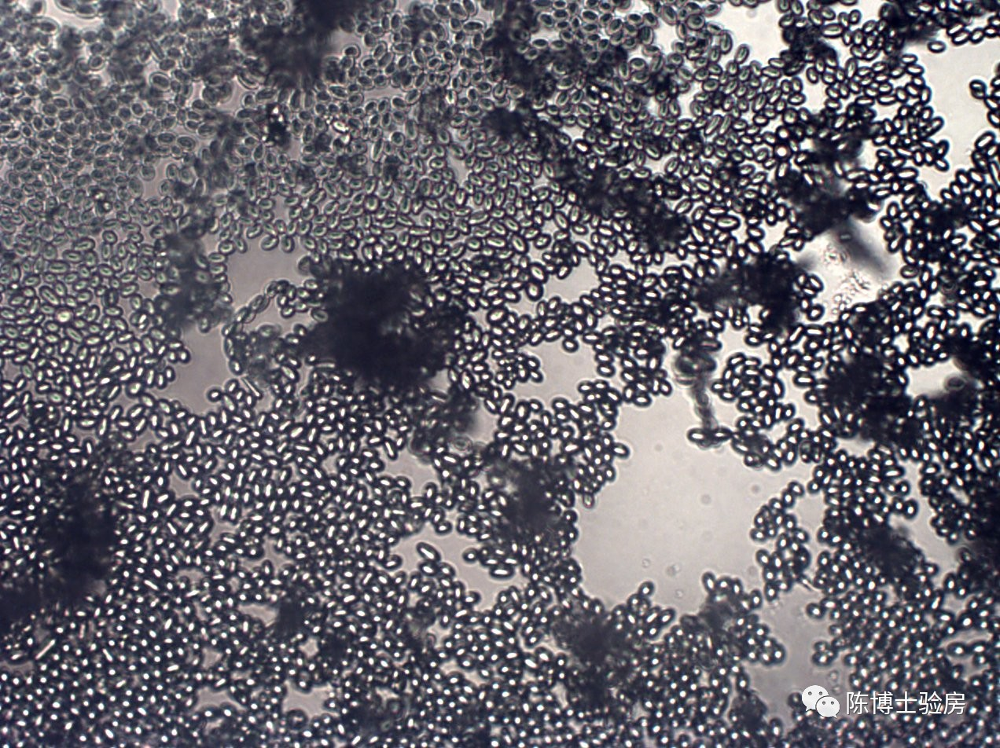
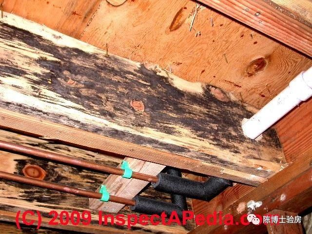
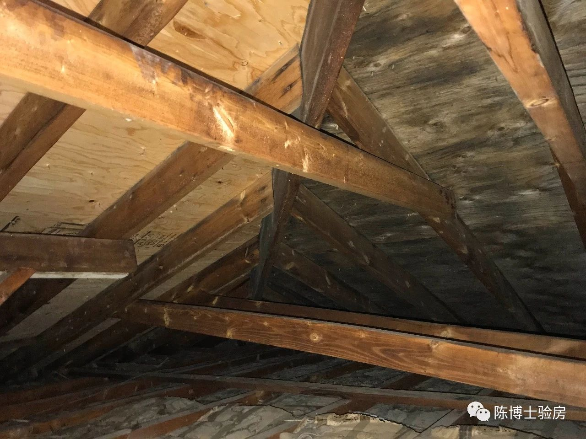
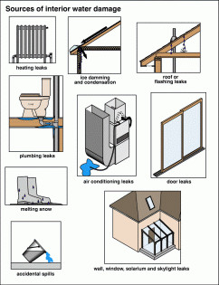
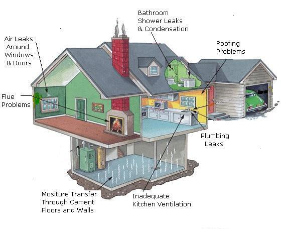

在屋子里，人们可能最不喜欢看到就是霉菌。我们也经常在洗手间里，下水管的旁边，屋子的壁橱里，或是地下室里某个阴潮角落，看到黑色的霉菌。我在验房的时候，买家也经常有的问题就是：这个屋子里有霉吗？

下面，陈博士为您简单的介绍一下什么是霉菌，它的危害，以及如果预防和清除霉菌。
什么是霉菌?
霉菌是对一类真菌的俗称，它们的外观呈棉絮状或丝状。霉菌在室内和室外均能生长。世界上究竟有多少种真菌，我们无从知晓，据估计少则数万种，多则三十万种以上。霉菌适宜在温暖（4-60℃）、潮湿和湿润的地方生长，它们通过产生孢子来传播和繁殖。
孢子无处不在
经常有人说我家里没有霉菌。真的吗？ 如果你两个星期没有倒垃圾，或者是你把面包忘在了厨房的某个角落一个星期，那么会怎么样呢？也就是说，无论你的房子有多么的干净，霉菌的孢子都可能会找到合适的宿主。所以霉菌几乎无处不在，一年四季，在室内和室外都能发现霉菌。正是因为空气里一直含有孢子，所以让房子百分之百的“无霉”也不太现实。

霉菌的危害
上因为任何房子或空气中都可能会有孢子和霉菌，所以一般情况下，我们也不用担心。但是，如果室内空气的孢子含量要远远高于室外的含量，那么我们就应该警觉了。如果你在室内看到了大面积的霉菌生长，那么我们就应该马上采取行动了。

霉菌的危害有三种情况：
- 有些霉菌是无害的，只是影响美观
- 有些霉菌只对有些人敏感。就像有些人对花粉过敏。
- 有些霉菌对所有人都有害，它们能伤害人的呼吸系统，破坏人的免疫系统，降低人的免疫力。
我们经常说的“黑霉”，比如有时在地下室看到的小面积的黑色霉菌（学名：葡萄穗霉），就是对人体有害的一种真菌，应该尽早铲除；而有的黑色菌类，比如球毛壳霉，可能对身体无害，但却能引起某些人严重过敏的反应。
其实大多数霉菌，比如我们经常在阁楼屋顶木板底部看到的霉菌，大多是对人体无害的。我们并不需要一定要把它清除。当然，我们应该关心为什么会长霉菌。

霉菌的种类无法通过肉眼来进行辨识
人的肉眼无法分辨霉菌的种类，确定霉菌是否有害。霉菌的颜色并不能代表一切：黑色的霉菌不一定都有害，而浅色透明的霉菌可能就是对人体有害的。所以，霉菌的种类经常要专业人员，用显微镜才能辨别。
有了霉菌怎么办？: 预防才是上上策
霉菌生长需要四个条件：
- 霉菌孢子
- 温度 （4-60℃）
- 潮湿源/水源
- 宿主（霉菌生长的食物来源，比如木头，胶合板，遗忘的面包…）
所以，霉菌的预防就只能从这四个方面着手，但是:
- 霉菌孢子无处不在；霉菌的宿主、食物更是存在于房子的各个角落，所以，这两点我们根本无法控制；
- 没有人会愿意生活在4 ℃以下，或能生活在60℃以上，所以霉菌生长的温度，我们也无法控制；
- 那么就只剩下最后一点：控制霉菌生长的潮湿源或水源。其实，这也正是预防霉菌的关键，也是专业验房师发现霉菌的诀窍。
屋子里的潮湿源/水源
- 屋子的某些部件或系统漏水：比如来自屋顶，门，窗，地下室，外墙的漏水。这些漏水一般很容易被人们发现，但是有些情况，比如内墙小范围的渗水，则更不容易被人们觉察；
- 室内的进水管，下水管，或取暖系统漏水；
- 室内产生的潮气；比如人们做饭，洗澡，晾晒衣服等等，最终导致了大量的冷凝水；
- 空调系统，加湿机，除湿机，抽水泵的蓄水池等等。


霉菌的清除：
- 大部分的霉菌都可以用肥皂水或再加一点漂白粉就可以清除。但是对大面积的霉菌（超过1 平方米），或者是你已经感到不适，或者你怀疑是有害的霉菌，那么你最好雇佣专业人员来清除。
- 切断霉菌生长的水源和潮湿源：这是从根本上来解决问题。而且能防止霉菌死而复生。如果潮湿或漏水发生在隐避的地方，建议能请专业人士来排查。
版权声明：本网站所有内容，包括文字和音频，版权均属「陈博士验房」所有。任何个人、机构、组织未经本网允许，不得复制、改编、转发本网站内容到任何其它平台，违者将追究法律责任.